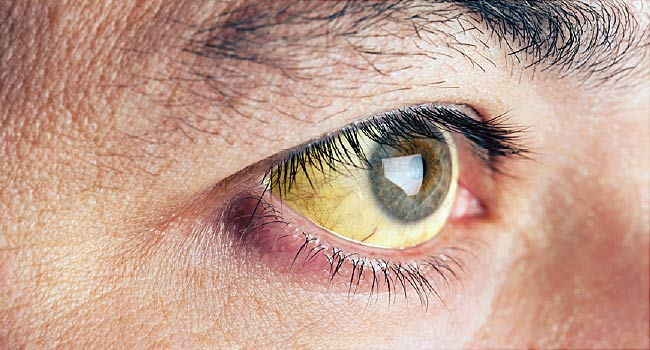

Healthy Vision for a Lifetime | NIH News in Health
 Skip to main content
A monthly newsletter from the National Institutes of Health, part of the U.S. Department of Health and Human Services
Site Menu
Home Latest Issue Past Issues Special Issues SubscribeCOVID-19 is an emerging, rapidly evolving situation.
Get the latest public health information from CDC: https://www.coronavirus.gov
Get the latest research information from NIH: https://www.nih.gov/coronavirus
May 2012
Print this issue
Health Capsule
Healthy Vision for a Lifetime
Send us your commentsMost of us take our eyesight for granted—unless something goes wrong. May is Healthy Vision Month, so it’s a great time to learn how to make healthy vision last a lifetime.
Eye disorders such as age-related macular degeneration, glaucoma and diabetic retinopathy affect millions of Americans, robbing many of their vision. “Thankfully, in the last decade, medical researchers have developed highly effective, sight-saving treatments,” says Dr. Paul A. Sieving, director of NIH’s National Eye Institute. “However, these treatments are only effective if the disease is diagnosed before it causes vision loss.”
Several eye disorders have no early warning signs. They can only be detected through a comprehensive dilated eye exam. Having regular exams is the best way to protect your eye health.
Keep your vision at its best. Learn more at www.nei.nih.gov/healthyeyes .
Related Stories
Eyelid Trouble?
Contact Lenses Slow Children’s Nearsightedness
How Cataracts Cloud Your Vision
Eye Safety Tips for Kids
Wise Choices
Tips for Eye Health
Know your family history. Some eye disorders are inherited. Talk with your eye care professional about your family’s eye health. Eat right to protect your sight. Foods rich in omega-3 fatty acids and vitamins A and C may help your eye health. Give it a rest. Work at a computer? Every 20 minutes, look about 20 feet in front of you for 20 seconds to reduce eyestrain. Let the sun shine. Wear sunglasses that block at least 99% of UV-A and UV-B radiation. Clean hands for a clear vision. Wash your hands before handling contact lenses. Disinfect and replace them as instructed. NIH Office of Communications and Public Liaison
Building 31, Room 5B52
Bethesda, MD 20892-2094
nihnewsinhealth@od.nih.gov
Tel: 301-451-8224
Editor: Harrison Wein, Ph.D.
Managing Editor: Tianna Hicklin, Ph.D.
Illustrator: Alan Defibaugh
Attention Editors: Reprint our articles and illustrations in your own publication. Our material is not copyrighted. Please acknowledge NIH News in Health as the source and send us a copy.
For more consumer health news and information, visit health.nih.gov .
For wellness toolkits, visit www.nih.gov/wellnesstoolkits .
Footer
Subscribe Find us on Facebook RSS Home Past Issues About Us Privacy Accessibility Freedom of Information Act No Fear Act Office of Inspector General USA.gov – Government Made EasyNIH…Turning Discovery Into Health ®
National Institutes of Health
9000 Rockville Pike, Bethesda, Maryland 20892
U.S. Department of Health and Human Services
Back to Top